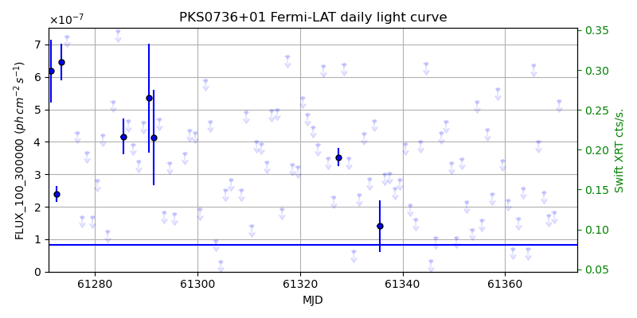
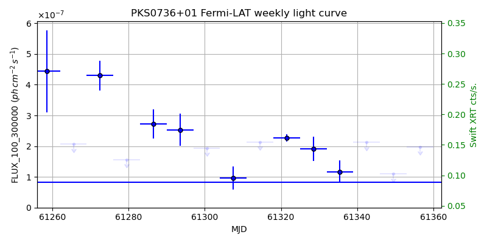
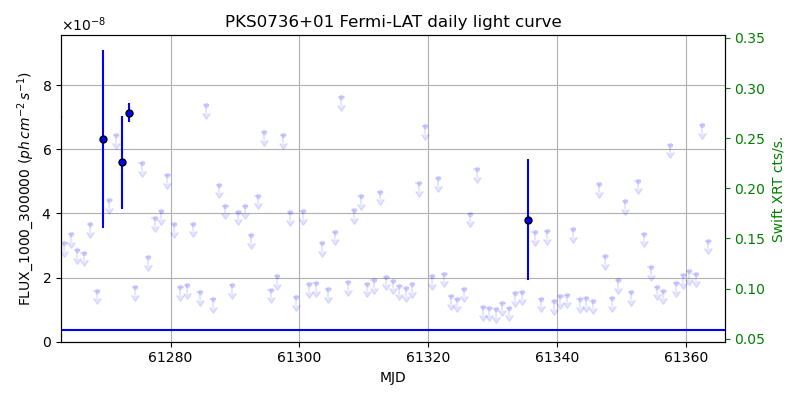
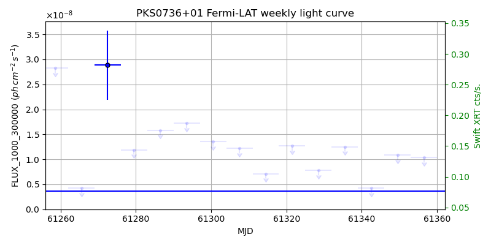

LAT Lightcurve site: https://fermi.gsfc.nasa.gov/ssc/data/access/lat/msl_lc/source/PKS_0736p01
Swift site: https://www.swift.psu.edu/monitoring/source.php?source=PKS0736+01
NED: Query
Time of last update of this page: UT: 2026-11-20 16:19 (MJD: 61364.680)
| Property | Value |
|---|---|
| R.A. | 7:39:18.00 |
| Dec. | 1:37:04.8 |
| z | 0.189 |
| 3FGL SpectrumType | LogParabola |
| 3FGL PL Index | |
| 3FGL Flux_100_300000 | 8.16e-08 1 / (s cm2) |
| 3FGL Flux_1000_300000 | 3.68e-09 1 / (s cm2) |
| 3FGL Flux >200 GeV | 1.72e-13 1 / (s cm2) |
| 3FGL Extrap. Crab >200 GeV | 0.00 |
| 3FGL Flux After EBL Absorption >200GeV | 1.06e-13 1 / (s cm2) |
| 3FGL EBL Crab Fraction >200GeV | 0.00 |

| MJD | dMJD | Flux | dFlux | Frac3FGL | FracCrab>200GeV | EBLFracCrab>200GeV |
|---|---|---|---|---|---|---|
| 61359.50 | 0.50 | 3.43e-07 | 0.00e+00 | 0.00 | 0.00 | 0.00 |
| 61360.50 | 0.50 | 2.20e-07 | 0.00e+00 | 0.00 | 0.00 | 0.00 |
| 61361.50 | 0.50 | 7.11e-08 | 0.00e+00 | 0.00 | 0.00 | 0.00 |
| 61362.50 | 0.50 | 1.63e-07 | 0.00e+00 | 0.00 | 0.00 | 0.00 |
| 61363.50 | 0.50 | 2.58e-07 | 0.00e+00 | 0.00 | 0.00 | 0.00 |

| MJD | dMJD | Flux | dFlux | Frac3FGL | FracCrab>200GeV | EBLFracCrab>200GeV |
|---|---|---|---|---|---|---|
| 61328.50 | 3.50 | 1.91e-07 | 3.97e-08 | 2.34 | 0.00 | 0.00 |
| 61335.50 | 3.50 | 1.17e-07 | 3.66e-08 | 1.43 | 0.00 | 0.00 |
| 61342.50 | 3.50 | 2.13e-07 | 0.00e+00 | 0.00 | 0.00 | 0.00 |
| 61349.50 | 3.50 | 1.10e-07 | 0.00e+00 | 0.00 | 0.00 | 0.00 |
| 61356.50 | 3.50 | 1.98e-07 | 0.00e+00 | 0.00 | 0.00 | 0.00 |

| MJD | dMJD | Flux | dFlux | Frac3FGL | FracCrab>200GeV | EBLFracCrab>200GeV |
|---|---|---|---|---|---|---|
| 61359.50 | 0.50 | 2.08e-08 | 0.00e+00 | 0.00 | 0.00 | 0.00 |
| 61360.50 | 0.50 | 2.20e-08 | 0.00e+00 | 0.00 | 0.00 | 0.00 |
| 61361.50 | 0.50 | 2.12e-08 | 0.00e+00 | 0.00 | 0.00 | 0.00 |
| 61362.50 | 0.50 | 6.76e-08 | 0.00e+00 | 0.00 | 0.00 | 0.00 |
| 61363.50 | 0.50 | 3.15e-08 | 0.00e+00 | 0.00 | 0.00 | 0.00 |

| MJD | dMJD | Flux | dFlux | Frac3FGL | FracCrab>200GeV | EBLFracCrab>200GeV |
|---|---|---|---|---|---|---|
| 61328.50 | 3.50 | 7.81e-09 | 0.00e+00 | 0.00 | 0.00 | 0.00 |
| 61335.50 | 3.50 | 1.25e-08 | 0.00e+00 | 0.00 | 0.00 | 0.00 |
| 61342.50 | 3.50 | 4.22e-09 | 0.00e+00 | 0.00 | 0.00 | 0.00 |
| 61349.50 | 3.50 | 1.09e-08 | 0.00e+00 | 0.00 | 0.00 | 0.00 |
| 61356.50 | 3.50 | 1.04e-08 | 0.00e+00 | 0.00 | 0.00 | 0.00 |
--------------------------------------------------------- Using user-supplied coords: 7:39:18.00 1:37:04.8 2000 --------------------------------------------------------- FLWO UT night of: 2026-11-21 Local Sid. @ Midnight: 03:37 Sunset (-15.0) (local, UT): 18:33 01:33 Sunrise (-15.0) (local, UT): 05:47 12:47 Moonrise (local, UT): Moonset (local, UT): 03:40 10:40 Moon phase: 0.85 --------------------------------------------------------- AzTime LSID UT Obj_el Obj_az Mn_el Mn_az Sep. --------------------------------------------------------- 18:33 22:09 01:33 -41.6 53.8 47.9 117.4 105.6 19:03 22:39 02:03 -36.3 60.5 53.3 125.0 105.5 19:33 23:09 02:33 -30.5 66.4 58.2 134.7 105.3 20:03 23:39 03:03 -24.6 71.5 62.3 146.9 105.1 20:33 00:09 03:33 -18.4 76.2 65.1 162.1 105.0 21:03 00:39 04:03 -12.1 80.5 66.3 179.7 104.8 21:33 01:09 04:33 -5.6 84.6 65.4 197.5 104.7 22:03 01:39 05:03 1.0 88.5 62.9 213.2 104.5 22:33 02:09 05:33 7.1 92.5 59.0 225.9 104.3 23:03 02:39 06:03 13.4 96.5 54.2 235.9 104.2 23:33 03:09 06:33 19.7 100.8 48.9 243.9 104.0 00:03 03:39 07:03 26.0 105.3 43.2 250.4 103.8 00:33 04:10 07:33 32.0 110.4 37.3 255.9 103.6 01:03 04:40 08:03 37.9 116.1 31.2 260.7 103.4 01:33 05:10 08:33 43.5 122.8 25.1 265.1 103.2 02:03 05:40 09:03 48.6 130.7 19.0 269.2 103.0 02:33 06:10 09:33 53.1 140.2 12.9 273.0 102.7 03:03 06:40 10:03 56.7 151.8 6.8 276.9 102.5 03:33 07:10 10:33 59.1 165.2 1.0 280.7 102.2 04:03 07:40 11:03 59.9 180.0 -4.9 284.7 101.9 04:33 08:10 11:33 59.1 194.7 -11.1 288.8 101.6 05:03 08:40 12:03 56.7 208.2 -16.8 293.2 101.3 05:33 09:10 12:33 53.1 219.7 -22.3 298.1 101.0 05:47 09:25 12:47 51.1 224.5 -24.8 300.5 100.9 --------------------------------------------------------- Dark hours >55 deg.: 1.63 srcstart (UT): 2026-11-21 10:40 srcend (UT): 2026-11-21 12:18